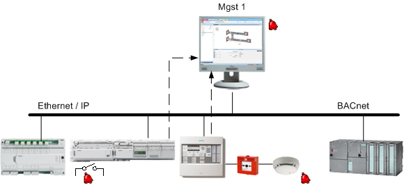
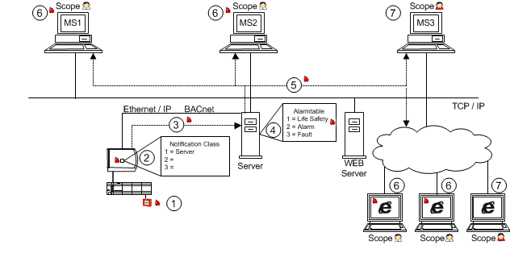
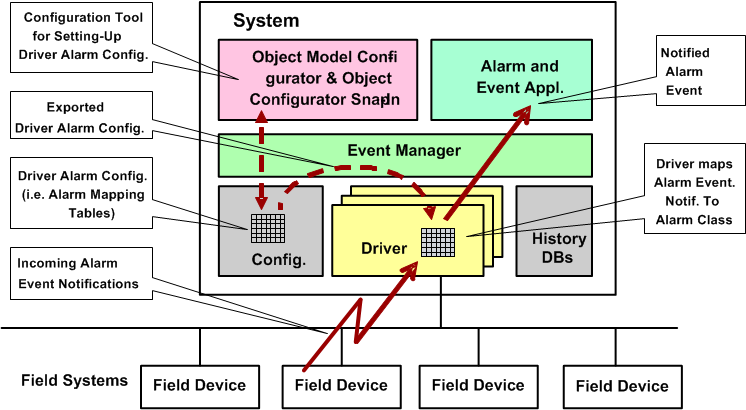
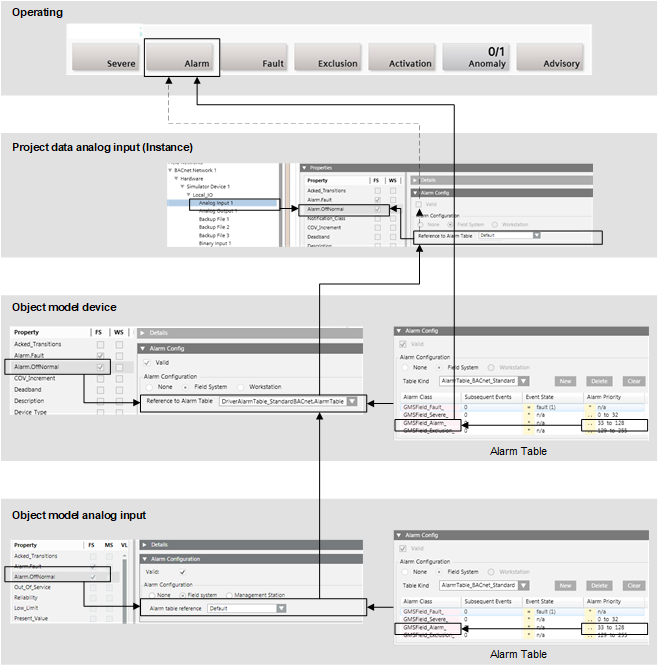
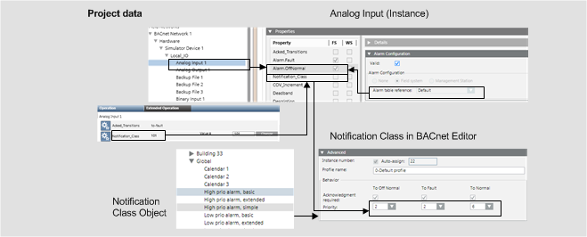

Field System Alarms
Field system alarms are primarily set up on the field panel; the operator is restricted with regard to editing. An alarm set up in this manner is highly reliable regarding alarming one or more recipients.

The alarm object changes its status and sends an alarm when a physical event occurs. The Desigo CC management station receives the alarm message and forwards it to the recipient. The new status is now displayed in the alarm table. Desigo CC also forwards the information to the printer, mail, pager, and so on, to the extent not already forwarded via the field system.
Alarm Response for Field System Alarms
The topology displays how a defined field system alarm behaves from the periphery up to the Desigo CC management stations.

Workflow and Alarm Response | |
| Description |
_ | Network |
… | Alarm direction |
1 | Field system alarm is triggered and reported to the automation station or alarm control units. |
2 | In the Notification Class function block, the alarm is forwarded to the recipients based on the alarm recipient list. |
3 | Alarm information is forwarded via the BACnet protocol to the server. |
4 | A priority class is assigned on the server based on the alarm table for the alarms. |
5 | Alarm information is transmitted using the identified priority class via TCP/IP, to the management stations. |
6 | The corresponding alarm information in the appropriate priority class is displayed for the Scope user. |
7 | A user not corresponding to the appropriate alarm information in Scope cannot display the alarms. |
Configuration of Field System Alarms
The field system alarm configurator connects the alarm event notification (from the automation station) to the associated alarm class such as Life Safety, Fault, Alarm, and so on.

Alarm Tables for Field System Alarms
The figure below displays how an alarm is configured in Desigo CC to display it in the correct alarm class. The influence of a Region or Country adaption is not a part of this illustration.
Alarm Table Standard Configuration. | ||
Object | Alarm Setting | Validity Info |
Object Model | Default | Valid |
Device | Alarm table | Valid |
Data point instance | Default | Invalid |

Notification Class and Summary Bar
The notification class must be properly set up in the subsystem to display it correctly on the Summary bar. This occurs at the individual data point as well as on the notification class (NC) object.
The following conditions must be met to display alarms in the Summary bar:
- The alarm priority must be assigned to an event category in the alarm table.
- In the Object Model of a Data Point Type, the corresponding property must be set up as field system alarm and the event table must be assigned (in this example, Default is used).
- In the Object Model device, the corresponding property must be set up as field system alarm and the event table must be assigned.
NOTE: If the Valid check box is selected, the alarm table from the device becomes active when the instance Valid check box is cleared. - On the data point instance, the Valid check box must be cleared.
NOTE: If the Valid check box is selected, the alarm table from the instances becomes active. - The corresponding priority must be defined in the Notification Class function block of the subsystem.


There are subsystems that automatically calculate the notification class from the alarm function and alarm class. The notification class cannot be edited on the alarm object in this case. Change the alarm function or alarm class to receive another notification class.
Standard Priority Classes
The priority class for an alarm can be displayed or edited in the Notification Class block for the property priority.
Display on the Summary Bar | |
Event category | BACnet Standard |
Life Safety | 0‒31 |
Alarm | 32‒63 |
Supervisory |
|
General | 64‒95 |
Trouble | 96‒127 |
Maintenance | 128‒191 |
Status | 192‒255 |
Fault | = Fault |